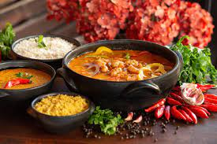
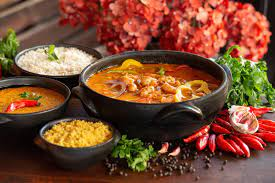
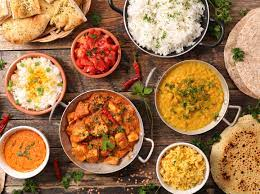
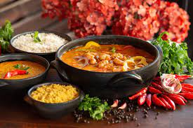

 

Japan is one of the best countries for food, not just in Asia, but in the world. The fact that Japan trails only France in number of Michelin stars speaks for itself.
Unlike many travel bloggers, we don’t have a desire to visit every country in the world but we do intend to visit every prefecture in Japan, and a lot of that has to do with our love for traditional Japanese food culture. If the cost of living weren’t so high, we’d actually love to live in Japan. That would be a dream!
To be honest, I don’t think I’ve ever met a Japanese dish I didn’t like so it was hard limiting this food guide to just 45 dishes. To make it as well-rounded as possible, I focused on creating a balanced list that featured both popular Japanese dishes and more obscure regional specialties from the different prefectures in Japan.
Traditional Japanese foods like ramen and tempura are represented well but so are lesser known prefectural delicacies like fukagawa meshi and kaga ryori. You’re probably familiar with maguro sushi and sashimi, but have you tried kabura zushi?
Japanese cuisine is my favorite cuisine in the world so a lot of love went into writing this guide on traditional Japanese foods. No matter what your level of affection for traditional Japanese cuisine, I hope you find something delicious to whet your appetite before that next trip to Japan.
JAPANESE FOODS
For us, Vietnam is one of the world’s best countries for food. We’ve been to Vietnam several times now and Vietnamese cuisine always leaves us wanting for more.
My most recent visit to Vietnam was a month-long stay in which I explored the country’s diverse cuisine from north to south. I ate my way through Sapa, Hanoi, Hue, Hoi An, Saigon, and the Mekong Delta with the goal of writing a traditional Vietnamese food guide that showcased the best and most interesting dishes Vietnam had to offer.
If you’re wondering what to eat in Vietnam, then this Vietnamese food guide will be very useful to you. It lists 45 of the tastiest Vietnamese dishes you can have throughout the country. In trying these dishes, I hope you fall in love with traditional Vietnamese food as much as we have.
This Vietnamese food guide advises you on what dishes to eat, but if you’re looking for the best Vietnamese restaurants and street food stalls in key cities throughout Vietnam, then be sure to check out our Hanoi, Ho Chi Minh City (Saigon), Hue, and Hoi An food guides as well. Enjoy!
VIETNAMESE FOODS
In my opinion, Spain is one of the world’s best countries for food. It’s home to an influential cuisine that’s given birth to globally appealing dishes like paella, tapas, and churros.
Having grown up in the Philippines, Spanish food is very familiar to us. Many Filipino dishes were either introduced by Spain or adapted from Spanish cuisine like arroz caldo, pochero, afritada, and ensaymadas.
On our most recent trip to Europe, we dedicated over half our time to Spain so we could really sink our teeth into Spanish cuisine and try as many traditional Spanish dishes as we could.
We visited prominent Spanish food cities like Barcelona, Madrid, Granada, and San Sebastian, along with lesser known but equally delicious destinations like Logroño and Oviedo to come up with this Spanish food guide with 45 must-try dishes in Spain.
If you’re planning a trip to the Iberian peninsula and looking for the best food in Spain, then this Spanish food guide will give you plenty to look forward to.
SPANISH FOODS
It was my first time in Greece but Greek food wasn’t unfamiliar to me. It’s a popular and influential cuisine that can be enjoyed in many countries outside of Greece.
Globalization has brought far-flung dishes to our dinner table so I was already familiar with popular Greek dishes like gyros, saganaki, dolmadakia, and moussaka. But like any serious food lover, I wanted to experience each and every one of those dishes in Greece.
In my opinion, until you’ve tried a dish where it’s actually from, then you can’t say you’ve truly had it. It’s like saying you’ve experienced the beauty of a Santorini sunset from looking at a postcard.
As expected, my love for Greek food grew exponentially after visiting Athens and Santorini. I’ve had a lot of amazing authentic Greek food in my life but every Greek dish I knew tasted even better in Greece.
If you want to taste the absolute best Greek food, then be sure to look for these 25 traditional Greek dishes on your next trip to Greece.
GREEK FOODS
Eating South Korean food in the capital city of Seoul was a game-changer.
I’ve been exposed to Korean food since childhood but my experience was limited to the most popular Korean dishes. Before our trips to Korea, all I knew about were bulgogi, galbi, and jap chae. That was it.
Visiting Seoul opened my eyes to a new dimension of Korean cuisine. It was like opening door number two and discovering new and delicious dishes like jokbal, gyeranppang, and ganjang gejang. I was intrigued and excited and curious to try as many Korean foods as I could.
We’ve been to Korea three times in over four years and have tried many tasty Korean dishes, the best and most interesting of which are listed in this South Korean food guide.
If you’re visiting South Korea and want to experience as wide a range of Korean food as possible, then this article will be very useful to you.
SOUTH KOREA FOODS
Contact Information
|
Name:Kristel P. Jimenez Section:BSME-3E Email Address:jimenezz.kristel@gmail.com Contact Number:0949 127 3503 |
Name: Ace Denver C. Panong Section:BSME-3E Email Address: panongacedenver@gmail.com Contact Number:0916 475 8023 |
|
how helpful was our website? |